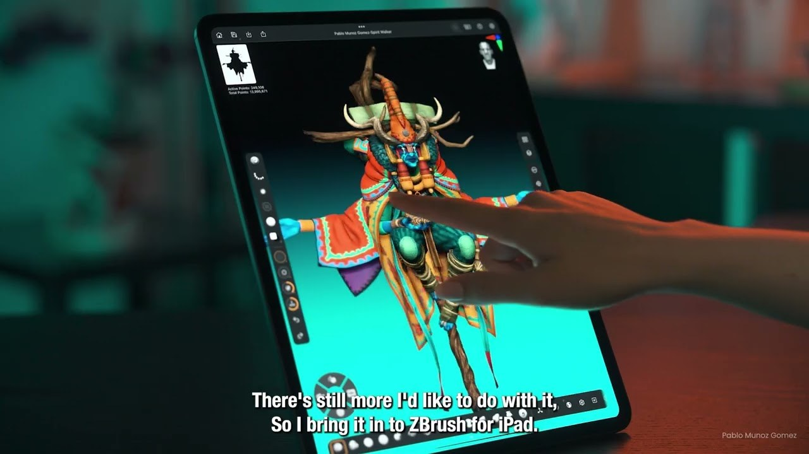

AI 生成：Cinema 4D…features 的製作重點
這則內容聚焦 AI 3D 生成 的製作應用。對 AI 3D 生成 流程，先看它實際改變哪些操作、交換或輸出步驟，再決定是否納入現有 SOP。

AI 3D ★★★☆☆
完整分析
技術／流程變更
「AI 生成：Cinema 4D…features 的製作重點」聚焦 AI 3D 生成，可先從 實際製作 角度拆解它對現有製作流程的實際變化。
Production 影響
針對「AI 生成：Cinema 4D…features 的製作重點」，AI 3D 生成 團隊應先用小規模案例確認它解決的是 authoring、交換、品質控制還是 runtime 問題，再決定導入範圍。
導入測試與限制
若要把「AI 生成：Cinema 4D…features 的製作重點」納入 production，仍需用實際 DCC／引擎版本、代表性資產與目標輸出驗證；單一案例、展示或宣傳頁不能直接當成固定工時、品質或效能收益。
BRIEF｜來源已驗證；證據深度較有限，完整分析會明確區分已知資訊與待驗證事項。